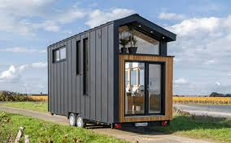
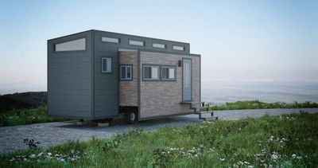
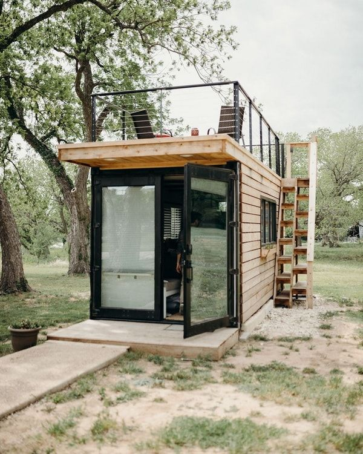
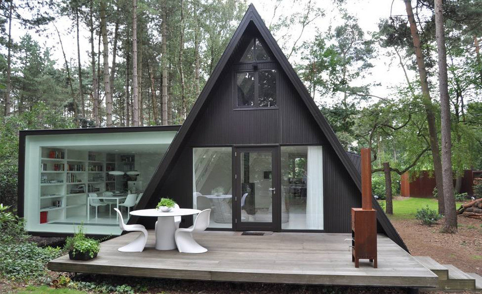
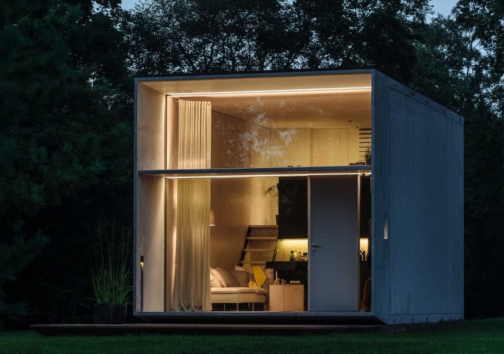

Las mini casas o “tiny house” fue un movimiento que nació en EEUU a finales de los 90, a raíz de la aparición del minimalismo arquitectónico. Este tipo de viviendas ronda los 16-50 metros cuadrados, trata de aprovechar al máximo el espacio.
En España el movimiento está comenzando a surgir poco a poco, ya que existe un pequeño vacio legal debido a que hay algunas que son transportables y se consideran igual que las caravanas.
La decoración en este tipo de hogares suele ser muy variada pero generalmente están amueblados con muebles plegables y se utilizan colores que den la sensación de amplitud y no generen mucho estrés. En este tipo de viviendas es muy común jugar con las alturas.
Existen diferentes tipos de mini casas:
- Mini casas sobre ruedas.
- Mini casas modulares.
- Mini casas en contenedores.
- Minicasas de obra.
- Mini casas prefabricadas fijas.
- Mini casas de madera o cabañas.
- Mini casas de hormigón.
Son casas prefabricadas sobre ruedas que tienen utilidades parecidas a las autocaravanas, pero son más acogedoras, tienen más espacio y son fáciles de transportar. Generalmente están fabricados con panel de sándwich, chapa, madera…
Son casas que se pueden recoger y transportar fácilmente con un camión y una pluma. Son mas demandadas por su aspecto minimalista. Tienen estructura metálica y puede estar fabricados en madera o panel de sándwich.
Se han convertido en una de las más comunes en los últimos años por su fácil transporte, aunque es necesario un buen aislamiento para una buena eficiencia energética, ya que el metal de su estructura puede alcanzar grandes temperaturas.
Las mini casas de obra son estructuras de hormigón y ladrillos, las únicas diferencias en este tipo de mini casas es su eficiencia energética y el coste de construcción y mantenimiento de la vivienda.
5. La diferencia es que, aunque estén construidas con panel de sándwich o madera y no sean mini casas portátiles si pueden ser en algunos casos desmontables.

6. Las mini casas de madera es una de las opciones más demandada por ser un buen aislante, dar un aspecto acogedor y natural y que el material sea degradable y reutilizable. Además sus precios puede ser muy económico.
Son las menos demandadas a pesar de su gran eficiencia energética debido a su buen aislamiento.
